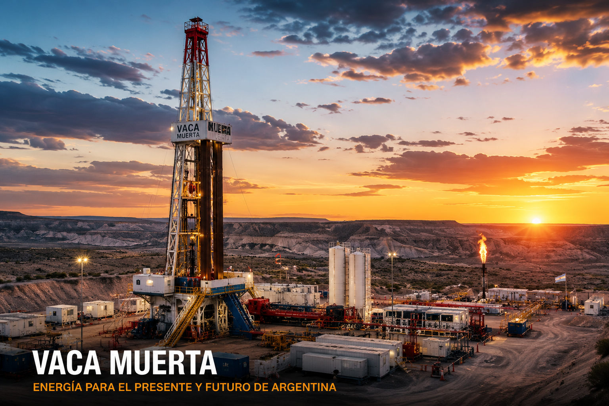

01
Encontrar
Identificar una formación geológica con materia orgánica, madurez térmica y características adecuadas.
Del origen geológico al desarrollo de un pozo no convencional.
Un recorrido interactivo por la geología, el sistema petrolero, Vaca Muerta y las tecnologías que permiten producir hidrocarburos desde rocas de muy baja permeabilidad.

En un yacimiento convencional, los hidrocarburos pueden migrar desde la roca madre hacia una roca reservorio donde quedan acumulados. En un sistema no convencional como Vaca Muerta, permanecen dentro de una roca de muy baja permeabilidad.
Identificar una formación geológica con materia orgánica, madurez térmica y características adecuadas.
Llegar hasta la formación objetivo y desarrollar un tramo horizontal dentro de la roca.
Generar una red de fracturas mediante estimulación hidráulica y mantenerlas abiertas con agente de sostén.
Permitir que los hidrocarburos recorran las fracturas y lleguen hasta el pozo para ser conducidos a superficie.
Una extensa cuenca sedimentaria ubicada principalmente en el oeste de Argentina, con una evolución geológica que permitió generar y almacenar importantes recursos hidrocarburíferos.
La Cuenca Neuquina se desarrolla principalmente en las provincias de Neuquén, Mendoza, Río Negro y La Pampa.
La importancia de una cuenca no depende solamente de cuánto hidrocarburo contiene, sino también de sus características geológicas y de la tecnología disponible para producirlo.
Las rocas de la Cuenca Neuquina son el resultado de millones de años de sedimentación, enterramiento, deformación y transformación.
Formación sedimentaria rica en materia orgánica, considerada la principal roca generadora y reservorio no convencional de la Cuenca Neuquina.
Acumulación de sedimentos.
Aumento de presión y temperatura.
Transformación de materia orgánica.
Formación de petróleo y gas.
Aplicación de tecnología moderna.
La diferencia fundamental está en cómo se encuentran almacenados los hidrocarburos y en la capacidad de la roca para permitir su movimiento.
Los hidrocarburos generados en la roca madre pueden migrar hacia un reservorio con mayor permeabilidad y acumularse debajo de una roca sello.
En un sistema shale, la roca que generó los hidrocarburos también puede actuar como reservorio. La muy baja permeabilidad dificulta el movimiento natural de los fluidos.
El desarrollo de shale combina geología, perforación, completación y estimulación hidráulica.
Durante millones de años, la materia orgánica quedó enterrada y sometida a presión y temperatura. La maduración generó petróleo y gas que quedaron alojados en la roca.
NANOPOROSEl pozo comienza verticalmente y luego cambia de dirección hasta desarrollar un tramo horizontal dentro de la formación objetivo.
POZO HORIZONTALSe inyecta un fluido a alta presión para generar fracturas controladas. El agente de sostén ayuda a mantenerlas abiertas.
FRACKINGLos hidrocarburos atraviesan la red de fracturas hacia el pozo y luego son conducidos hasta superficie para su tratamiento.
PRODUCCIÓNUna formación sedimentaria de gran importancia para el desarrollo de recursos no convencionales en la Argentina.
Vaca Muerta es una formación de origen marino constituida principalmente por lutitas y margas ricas en materia orgánica. Su baja permeabilidad es una de las razones por las que se requiere una combinación de perforación horizontal y estimulación hidráulica.
La temperatura y el tiempo geológico influyen en la transformación de la materia orgánica y en el tipo de hidrocarburo generado.
La ingeniería transforma una formación de baja permeabilidad en un sistema capaz de entregar hidrocarburos a superficie.
El pozo comienza descendiendo verticalmente desde superficie hasta aproximarse a la formación objetivo.
La estimulación hidráulica permite crear conductos artificiales dentro de la roca para mejorar la comunicación entre la formación y el pozo.
La presión del fluido genera fracturas. El agente de sostén, principalmente arena, queda dentro de ellas y contribuye a mantenerlas abiertas una vez que disminuye la presión.
Indicadores y conceptos que permiten dimensionar la importancia de los recursos no convencionales.
La Cuenca Neuquina abarca principalmente sectores de Neuquén, Mendoza, Río Negro y La Pampa.
La perforación horizontal permite aumentar el contacto con la formación productiva.
Una de las características que diferencia estos reservorios de los sistemas convencionales.
El desarrollo requiere planificación, monitoreo y control durante todo el ciclo productivo.
El desarrollo de hidrocarburos requiere controles técnicos, ambientales y de seguridad durante las distintas etapas de la operación.
Casing, cementación, monitoreo de presión y control de barreras forman parte de la gestión de integridad.
La operación requiere planificación del abastecimiento, tratamiento, reutilización y disposición de fluidos.
Se utilizan mediciones y controles para verificar el comportamiento del pozo y las condiciones de operación.
La planificación, capacitación, procedimientos y control de riesgos son fundamentales en las operaciones.
Ocho preguntas sobre geología, sistemas petroleros y desarrollo de pozos no convencionales.
Buscá rápidamente los principales términos utilizados durante el recorrido.
Capacidad de una roca para permitir el movimiento de fluidos a través de sus poros conectados.
Proporción del volumen de espacios vacíos de una roca respecto de su volumen total.
Carbono Orgánico Total. Indicador utilizado para evaluar la cantidad de materia orgánica presente en una roca.
Materia orgánica insoluble presente en rocas sedimentarias que puede generar hidrocarburos durante su maduración.
Roca sedimentaria de grano fino y muy baja permeabilidad.
Nombre común de la estimulación mediante fracturación hidráulica.
Agente de sostén, generalmente arena, utilizado para ayudar a mantener abiertas las fracturas creadas.
Flujo inicial de fluidos que retorna a superficie luego de determinadas operaciones de estimulación.
Formación que contiene materia orgánica capaz de generar hidrocarburos bajo determinadas condiciones.
Roca capaz de almacenar y permitir el movimiento de hidrocarburos en sus espacios porosos.
Roca de muy baja permeabilidad que limita la migración de hidrocarburos.
Pozo que desarrolla una sección de alta inclinación o aproximadamente horizontal dentro de la formación objetivo.
Proyecto académico desarrollado para estudiar la Cuenca Neuquina, Vaca Muerta y los métodos modernos de desarrollo no convencional.